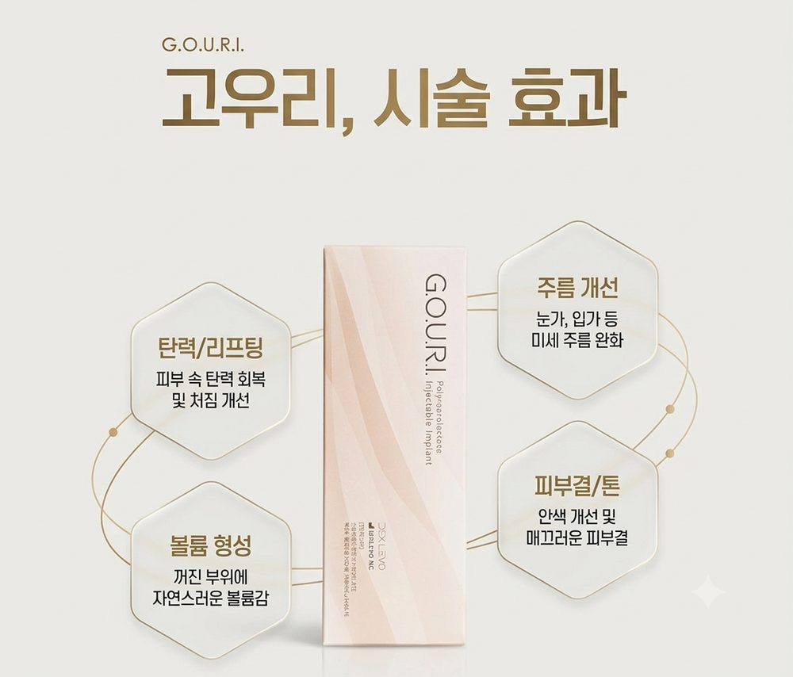
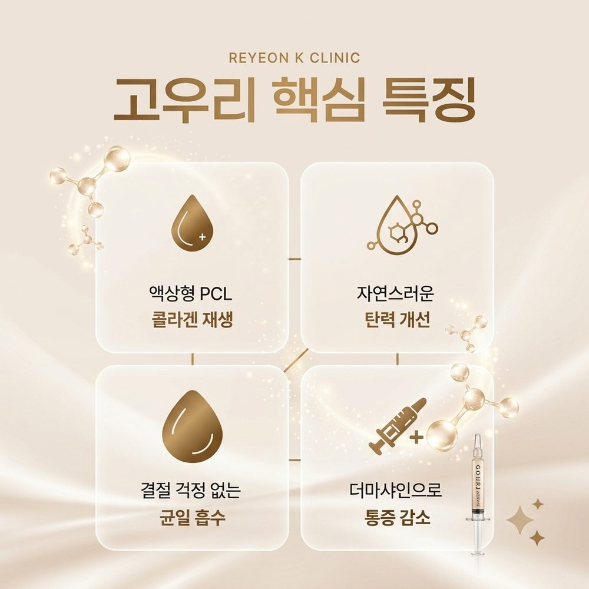

요즘 피부가 푸석하고, 크림을 발라도 건조함이 그대로인가요?
화장이 자꾸 뜨거나 잔주름이 눈에 띄기 시작했다면 피부 겉이 아니라 피부 속 환경을 함께 관리해야 할 때입니다. 많이 찾으시는 스킨부스터의 종류, 통증, 가격을 정리했습니다.
스킨부스터는 피부 장벽 강화와 재생을 돕는 유효 성분을 진피층에 직접 주입하는 시술입니다.
피부 속까지 성분을 전달해 수분감, 탄력, 피부결, 톤 개선을 기대할 수 있습니다. 효과는 개인과 성분에 따라 다릅니다.
| 종류 | 주요 성분 | 특징 |
|---|---|---|
| 리투오(Re2O), 셀르디엠(CELLReDM) | 인체 동종 진피(ECM) | 인체 진피 기반으로 피부 구조 자체를 재건하는 데 초점 |
| 리쥬란힐러 | 연어 DNA 유래 성분 | 얇은 진피층의 영양 공급과 세포 재생, 탄력 관리에 도움 |
| 고우리 | 액상화된 PCL | 자가 콜라겐 생성을 유도하고, 얼굴 전반에 고르게 퍼지는 타입 |
성분마다 효과와 적합한 피부 상태가 달라서, 의료진과 상담한 뒤 선택하는 것이 중요합니다.
고우리는 완전히 액상화한 PCL 성분을 활용해 자가 콜라겐 생성을 유도하는 스킨부스터입니다.
입자가 없는 액상 형태라 얼굴 전반에 넓게 퍼지고, PCL 성분은 체내에서 분해되는 기간이 길어 콜라겐이 꾸준히 만들어지는 점이 특징입니다. 시술 후 반응과 부작용 가능성은 개인마다 다르니 상담 때 꼭 확인하세요.


결론부터 말하면 아픈 편입니다. 다른 주사 시술에 비해 입자가 크다 보니 통증을 느끼는 분이 많아서, 수면마취를 선택하는 분도 많습니다.
하지만 방법에 따라 통증 부담을 줄일 수 있습니다.
더마샤인은 1회 샷당 9개 지점에 동시에 주입해서 시술이 빠릅니다.
손주사보다 통증과 멍이 적은 편입니다.
피부를 음압으로 밀착·흡착한 상태에서 주입해 약물이 밖으로 흘러내리는 양을 줄여 줍니다.
가격은 종류, 용량, 시기별 이벤트에 따라 달라집니다. 리연케이의 2026년 10월 이벤트가는 아래와 같습니다.
| 종류 | 10월 이벤트가 (부가세 별도) |
|---|---|
| 고우리 1syringe (더마샤인 포함) | 39만원 |
| 에스테필 1vial | 69만원 |
| 스컬트라 1vial | 79만원 |
※ 위 가격은 2026년 10월 31일까지 진행하는 이벤트 기준입니다. 이후 가격은 전화(02-558-5581) 또는 홈페이지에서 확인해 주세요.
스킨부스터는 단순히 약물을 넣는 시술이 아닙니다. 피부 두께, 손상 정도, 고민에 맞춰 유효 성분을 적절한 층에 세밀하게 주입해야 하기 때문에 의료진의 숙련도를 확인하는 것이 좋습니다.
리연케이는 16년 이상의 임상 경험을 바탕으로 1:1 맞춤 상담을 통해 피부 상태를 확인한 뒤 종류와 방법을 안내해 드립니다.
버츄RF, 포텐자 같은 RF 니들 시술을 병행하면 스킨부스터와 함께 더 만족스러운 결과를 기대할 수 있는 경우가 있습니다.
다만 병행 여부와 순서는 피부 상태에 따라 달라서, 반드시 상담을 통해 결정하세요.
성분과 피부 상태에 따라 달라서 상담 때 안내해 드립니다.
주사 부위의 붉은기나 작은 부기가 있을 수 있습니다. 안내받은 주의사항을 지켜 주세요.
더마샤인 방식으로 통증 부담을 줄일 수 있습니다. 통증 민감도는 개인차가 있어 상담 때 맞춰 안내해 드립니다.
피부 속 환경이 달라지면 피부 겉도 달라집니다.
푸석하고 건조한 피부가 고민이라면 리연케이의원에서 1:1 상담으로 나에게 맞는 스킨부스터를 찾아보세요.
※ 본 글은 일반적인 정보 제공을 위한 것이며, 시술 효과와 결과는 개인에 따라 다를 수 있습니다. 정확한 진단과 시술 여부는 의료진과의 상담을 통해 결정해 주세요.